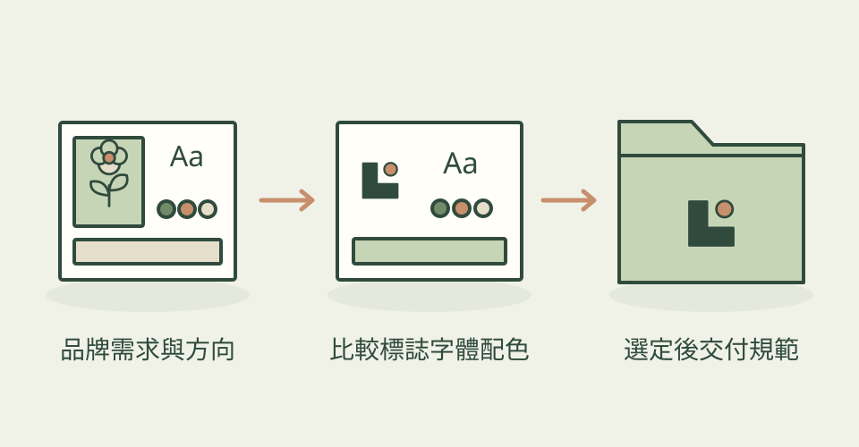

品牌常見的難題，是 Logo 很好看，字體和顏色卻像來自不同地方。Brand Identity 先找一個能解釋整套視覺的想法，再一起設計標誌、字體與色盤，讓每一個選擇有共同理由。
它怎麼幫忙
預設提供三套方向，也可指定一至四套；用同一份真實文案並排比較，檢查小尺寸標誌、色彩對比、色覺模擬、字形涵蓋與字體授權。你選定後才製作品牌規範 PDF、SVG／PNG 標誌和 CSS、SCSS、Tailwind、DTCG 設計變數。可以保留原標誌只換字體與配色，也能在自己的網站上試套。配圖是作者的虛構書店比較案例。
功能快速理解

同一個品牌想法產生標誌、字體與配色，先比較再製作完整規範。
功能示意・本站繪製 放大查看可以這樣開口
這是一個可依需求修改的委託範例。
替台南獨立書店做三套品牌，每套用同一個想法決定標誌、繁中文字體與兩種主色。先並排比較，檢查中文字形與小尺寸辨識度；等我選定後，再做網站和名片可共用的規範與向量檔。
適合什麼工作
適合獨立書店、咖啡品牌、小型工作室，以及需要把品牌規則交給前端工程師的設計師。已有品牌但只想更新部分元素，也能把原有部分設為保留。
開始之前
- 準備工具
- 可寫程式並看圖的 agent、Python 3.10+、Chromium 系瀏覽器與 Google Fonts 網路存取；建議用 uv，首次會下載所需 Python 套件。作者主要完整測試 Claude Code，其他平台能讀取 Skill 不等於流程已完整驗證。
- 使用成本
- MIT 技能，沒有必需的付費生圖 API；主要成本是 agent 用量、設定與反覆設計。作者六次測試中，到比較板約四十回合、約九十萬 billed-input-equivalent tokens，是作者量測，不能當固定報價。商用字體如另選付費款，仍須自行取得授權。
- 交付內容
- 品牌方向比較板、品牌規範 PDF、SVG／PNG 標誌、字體展示與設計 tokens
- 先留意
- 2026-10-27 首次收錄，專案建立於 10 月 4 日，目前提交為 10 月 10 日；不是今天推出。量測可找出對比、字形或檔案問題，不能保證美感、轉換率或商標可註冊。繁中品牌仍要逐項檢查字形。本次沒有安裝或執行候選。
作者與來源
本文依作者公開說明整理，沒有實際執行這個專案。功能插圖由本站繪製，原作者範例另行標示；並非本站執行技能的測試結果。GitHub 星數為專案總量，觀察時間為 2026年10月31日 08:30（台北時間）。
與前次快照相比增加 49 星；這不是 GitHub Trending 排名。